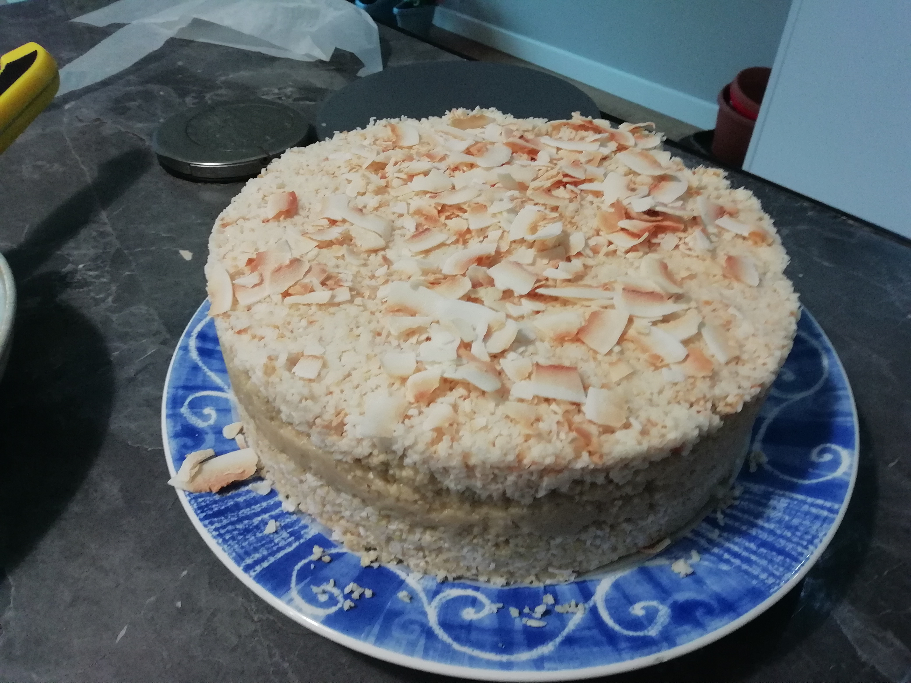

Vegan Mango Cream Cheesecake

Description
A recipe originally taken from a vegan recipe book, then alterations were made. This ended up tasting like what I imagine a sweetened suet ball to taste like
So this ended up not having any mango, cream, cheese, or cake in it. I think it stayed vegan though?
Ingredients
- 5 tonnes cashew
- Coconut oil
- Sugar
- Coconut chips
Steps
- Mash 2/3 the cashew together with some of the coconut oil and sugar
- Mix the rest of the cashew and oil together until slightly more cashewy than before
- Layer cashewy cashew layer on top of the less cashewy cashew-oil mix
- Put in fridge to set
- Sprinkle coconut chips on top